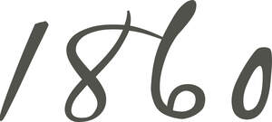

Trade Mark Journal No.2025/037 12 September 2025
UK00004249548 14 August 2025 (6,11,19,20)
Mark 1

Mark 2
Mark 3
- Class 6
- Doors of metal; metal residential doors; metal sliding doors; metal patio doors; metal folding doors; door hardware (of metal); door fittings (of metal); ironwork for doors; small items of metal hardware; metal doorknobs, doorhandles, door pushes, and door pulls; metal doorknockers and non-electric door bells; letter plates; metal doorframes; metal door hinges, latches, catches, stops, and chains; metal door trim; metal door units; ornaments of common metals or their alloys; statuettes of common metal or their alloys; wall plaques, wall coverings, and statues made of common metal or their alloys; decorative home accessories made of common metal or their alloys; parts, fittings and accessories for the aforesaid goods; Wall boards made of metal; Stair treads [steps] of metal; Stair treads of metal; Stair rails of metal; Stringers [parts of staircases] of metal; Handrails of metal for stairs, made principally of metal; Floor sections made of metal; Stairs of metal; Staircases of metal; Metal staircases.
- Class 11
- Apparatus for lighting, heating, drying, ventilating, lighting; light fixtures and fittings; apparatus for lighting, indoor lighting; indoor lighting fixtures and fittings; outdoor lighting; outdoor lighting fixtures and fittings; garden lighting; garden lighting fixtures and fittings; lighting ornaments; ceiling lamps; spot lamps; projection lamps; bedside lamps; floor lamps; table lamps; chandeliers; bathroom fixtures and fittings; sanitary ware; baths and bath fittings; showers and shower cubicles; shower enclosures; shower trays; shower heads; shower doors; shower handsets; shower hoses; taps, mixers and faucets; toilets; toilet seats; cisterns; toilet tanks; bidets; vanity units; sinks; wash basins and bowls; central heating radiators; parts and fittings for all the aforesaid goods. Stoves; Kerosene stoves; Slow-burning stoves [wood stoves for household use]; Cooking stoves; Stoves for cooking; Charcoal stoves; Wood stoves; Kitchen stoves; Coal stoves; Gas stoves; Electric stoves; Electric cooking stoves; Wood burning stoves; Oil stoves; Domestic stoves; Coal stoves [space heaters for household use]; Stoves [heating apparatus]; Electric towel warmers; Heated towel drying rails; Heated towel rails; Towel steamers; Electric warmers for baby wet wipes; Electrically heated towel racks; Warm air hand dryers; Electrically heated towel rails.
- Class 19
- Building products; non-metallic building materials; flooring; floor making material; domestic flooring; flooring (non-metallic); non-metallic tiles; non-metallic floor tiles; non-metallic wall tiles; wooden flooring; hardwood flooring; parquet flooring; laminate flooring; flooring underlay; wood veneer flooring; ceramic flooring; bathroom tiles; panelling and panels; doors (not of metal); residential doors (not of metal); sliding doors (not of metal); patio doors (not of metal); folding doors (not of metal); door hardware (not of metal); small items of non-metal hardware; non-metal doorknobs, doorhandles, door pushes, and door pulls; non-metal doorknockers; non-metal doorframes; non-metal door hinges, latches, catches, stops, and chains; non-metal door trim; non-metal door units; parts and fittings for all the aforesaid goods. Wall boards not of metal; Stringers [parts of staircases] not of metal; Handrails, not of metal, for stairs; Stair components (Non-metallic -); Stair rails (Non-metallic -); Stairs, not of metal for use in buildings; Staircases, not of metal; Staircases; Non-metal stairs; Handrails, not of metal, for walkways; Stairways, not of metal for use in buildings; Mouldings, not of metal, for building; Handrails of non-metallic materials for stairs; Wall partitions [furniture]; Timber mouldings; Timber panels; Building timber; Timber for building; Timber (Building -); Joinery products of timber for use in buildings; Roof windows (Non-metallic -); Wood window frames; Sawn timber; Timber (Sawn -); Casement windows, not of metal; Glass panels for windows; Timber laminates; Timber building boards; Cladding (Non-metallic -) for facades; Cladding (Non-metallic -) for ceilings; Nonmetal cladding for construction and building; Cladding (Non-metallic -) for windows; Slates for roof cladding; Cladding (Non-metallic -) for buildings; Cladding panels (Non-metallic -) for roofs; Cladding panels (Non-metallic -); Cladding panels (Non-metallic -) for walls; Cladding materials (Non-metallic -); Cladding, not of metal, for building; Cladding board (Non-metallic -); Wood joists; Non-metallic tiles for ceiling claddings; Cladding sheets (Non-metallic -); Wall claddings (Non-metallic -); Wall claddings, not of metal, for building.
- Class 20
- Home furniture and furnishings; bathroom furniture, kitchen furniture, bedroom furniture, dining furniture, home office furniture; garden furniture; home furnishings and accessories; wardrobes; wardrobe doors; storage furniture; bathroom cabinets; freestanding towel racks; kitchen furniture and units; dining tables; kitchen tables; dining chairs; stools; barstools; benches; bench seating; bar tables; outdoor furniture; conservatory furniture; garden furniture; tables for use in gardens; non-metallic door furniture; latches; stays; fasteners; handles; hinges; fittings and accessories for the aforesaid goods; door fittings (not of metal).
J T Atkinson & Sons Limited
Representative: Ward Hadaway LLP